PC Watch
https://pc.watch.impress.co.jp
PC/テクノロジーの最新情報、レポート等でPC業界を先取り
フィード
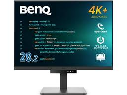
【本日みつけたお買い得品】3:2で縦に広いプログラマー向け4Kモニターが2万1,509円引き。Amazonセール
PC Watch
Amazonで、ベンキューの28.2型プログラミング向けモニター「RD280U」が、直近価格から2万1,509円引きの7万9,400円で販売中だ。
6時間前
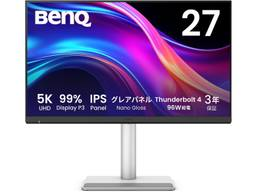
【本日みつけたお買い得品】Mac向け5Kモニターが2万1,836円引き。Amazonでセール中
PC Watch
Amazonで、ベンキューの27型から31.5型までのモニターがセール価格で販売されている。いずれもMac向けで、27型5Kの「MA270S」は、直近価格から2万1,836円引きの15万9,800円で販売中だ。
6時間前
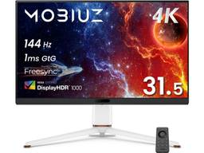
【本日みつけたお買い得品】8万円引き！31.5型や26.5型の4KゲーミングモニターがAmazonで特価
PC Watch
Amazonで、ベンキューのゲーミングモニターがセール価格で販売されている。31.5型4Kの「MOBIUZ EX321UX」は、直近価格から8万1,109円引きの15万9,800円で販売中だ。
8時間前
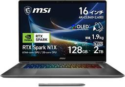
【本日みつけたお買い得品】AmazonでRTX Spark搭載MSIノートが予約開始。109万9,800円から
PC Watch
Amazonで、MSIのRTX Spark搭載ノートPC「Prestige N16 Flip AI+ C1XM」の予約販売が開始されている。価格は109万9,800円からで、発売予定日は10月31日。
10時間前
バッテリを外したら、代わりにファンが付いた。GPD WIN Max 3の“着脱式”はただのギミックじゃありません 1
1
PC Watch
ノートPCを選ぶとき、私たちはいつも何かを諦めてきました。軽さを取ればパワーが足りず、パワーを取れば重くてバッテリが持たない。どちらを優先するかは買う時に一度決めたら、そのマシンを手放すまで変えられない。それが当たり前だと思っていないでしょうか。
15時間前
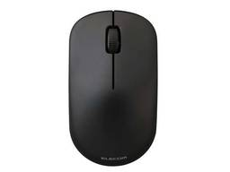
1,180円からの静音3ボタンマウス、エレコムが接続方式3種で展開
PC Watch
エレコムは、シンプルなシンメトリーデザインを採用したBluetooth/2.4GHz無線/有線の3種類から選べる静音設計の3ボタンマウスを10月上旬より順次発売する。
16時間前
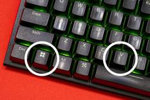
【今すぐ読みたい！人気記事】「Windows＋V」から始める快適クリップボード生活 - PC Watch
PC Watch
Windowsでは「Ctrl＋C」と「Ctrl＋V」のショートカットキーでクリップボードのコピー&ペースト機能を利用できることがよく知られている。Windows 10以降は、さらにWindowsキーを使った「Windows＋V」でクリップボードの履歴を表示する機能も加わった。
16時間前
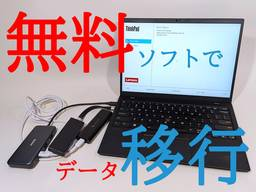
【今すぐ読みたい！人気記事】SSD換装+OS丸ごとデータ移行を無料ソフト「Clonezilla」でやろう - PC Watch 2
PC Watch
どんなに高級なノートPCであっても長く使い続けているとだんだんと不満を持ってくるようになる。CPUの性能低下はPCそのものを交換するしか手はないが、ストレージの残容量が減ってくると特にストレスが溜まる。それに伴い性能が低下するという問題が発生する場合がある。
16時間前
全面アルミで1.18kg、180度開く14型ノート「Swift Air 14」 2
PC Watch
日本エイサーは10月9日、ノートPC Swiftシリーズより、14型ノートPC「Swift Air 14(SFA14-I31)」を発売した。直販価格はCore 3 304搭載モデルが13万9,800円、Core 5 320搭載モデルが14万7,800円。
16時間前

写真も動画も声もまとめて0.74Bで検索。ローカルRAG向け「EmbeddingGemma 2」 58
PC Watch
録りためた動画の中の“あの場面”を、声で吹き込んだメモから探し出す。こうした検索をインターネットなしで実行できるAIモデル「EmbeddingGemma 2」を、Googleが10月6日(現地時間)に無償公開した。写真や動画、音声、文字、コードを1つのモデルで検索でき、ローカルRAG(検索拡張生成)では、資料を探す処理を受け持つ。オープンウェイト(モデルの重み)はHugging FaceとKaggleからダウンロードでき、Apache 2.0ライセンスの下で商用利用も認められる。
17時間前
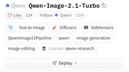
高速版「Qwen-Image-2.1-Turbo」重み公開、画像生成8ステップで完了 26
PC Watch
画像の生成と編集を、わずか8ステップでこなすAIの高速版が無料でダウンロードできるようになった。AlibabaのAI開発チームQwenは10月9日(日本時間)、画像生成AI「Qwen-Image-2.1-Turbo」をオープンウェイト(モデルの重み)として公開した。配布先はHugging FaceとModelScopeだ。ただし、モデルを無償で利用できるのは研究・評価目的に限られ、商用利用には別途契約が必要。
1日前
相次ぐサイバー攻撃被害。国家サイバー統括室が事業者に対策徹底を要請 21
PC Watch
大量の個人情報を扱う事業者のシステムへの不正アクセスにより、個人情報の漏洩事故が相次いでいる。これを受け、内閣官房国家サイバー統括室は10月9日、「不正アクセスによる漏えい等の事案を踏まえた対応について」を公表した。個人情報や機微な情報を扱う事業者に対し、対策の徹底を速やかに検討するよう求めている。
1日前
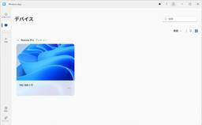
Windows App、リモートPC接続が正式提供に。職場アカウント不要 23
PC Watch
自宅や職場のPCに、クラウドPCと同じアプリからつなげるようになった。Microsoftは10月5日(米国時間)、Windows版「Windows App」でリモートPC接続機能の一般提供を開始したと発表した。Windows Appは、Microsoft Storeから無償で入手できる。
1日前
カタログのバッテリ時間はなぜ実際と違う？JEITAが解説ガイド公開 3
PC Watch
カタログに載っているバッテリ動作時間と、実際に使ったときの持ち時間はなぜ違うのか――そんな疑問に業界団体が答えるコンテンツが登場した。電子情報技術産業協会(JEITA)のPC・タブレット事業委員会は10月9日、Webコンテンツ「JEITA バッテリ動作時間測定法ガイド」を公開した。ノートPCのバッテリ動作時間の測定法や数値の見方を解説するものだ。
1日前
ガチくんに! 第433回切り抜き「ガチくんにマーベル闘魂で対戦させてみた結果…」
PC Watch
※毎週木曜日にプロ格闘ゲームプレイヤーであるガチくんをパーソナリティに迎え、ストリートファイター6攻略企画「ガチくんに!」をTwitchとYouTubeで配信しています。レギュラー出演者はぷげら、奥村茉実。ここでは当日放送したおおまかな内容を紹介するとともに、YouTubeにアップロードした切り抜きとアーカイブの動画を掲載しています。
1日前
Grok BotでXの投稿を検索/閲覧/監視できるように 6
PC Watch
SpaceXAIが提供するAIエージェント「Grok Bot」は10月8日、X上の投稿の検索や読み込み、監視に対応した。
1日前
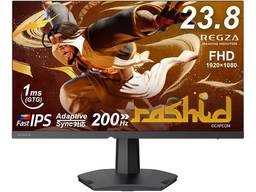
【本日みつけたお買い得品】Amazonで2万円切り！レグザの200Hzゲーミングモニター
PC Watch
Amazonにおいて、レグザ(REGZA)ブランドの23.8型ゲーミングモニター「RM-G244RE」がタイムセール中。直近価格の2,640円引きとなる1万9,800円で購入可能だ。
1日前
無料版ChatGPTにもGPT-6導入！回答に操作できるUIを生成 8
PC Watch
ChatGPTは、単なるチャットではなくインタラクティブなものになる――OpenAIは10月7日(現地時間)、ChatGPTに最新モデル「GPT-6」を全プランで順次展開すると発表した。有料のPlus、Pro、Business、Enterpriseプランでは同日から、FreeプランとGoプランでも10月8日から提供が始まる。なお、アップデートが適用されるのはChatGPTのチャットだけで、WorkとCodexの基盤モデルに変更はない。Enterpriseプランでの利用可否は、管理者の設定によって異なる。
1日前
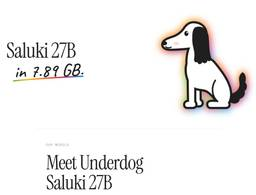
Qwen3.8-27Bを8GBに凝縮！メモリ16GBのノートで動く「Saluki 27B」 47
PC Watch
Opus 4.6 Maxに匹敵するとされる「Qwen3.8-27B」を、8GB未満に収めた量子化モデルが登場した。Underdogは10月8日(米国時間)、Alibabaの「Qwen3.8-27B」をベースに約2bitまで量子化したLLM「Underdog Saluki 27B 1.0」をオープンウェイト(モデルの重み)として公開した。Apache 2.0ライセンスを採用し、Hugging Faceからダウンロードできる。
1日前